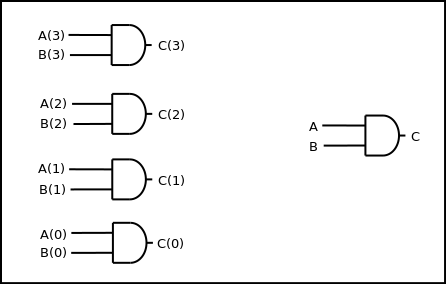
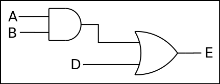
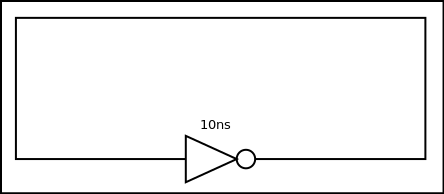

VHDL Notes
Table of Contents
1 Xilinx interface
1.1 Source
- File -> New project.
- Configure for the target hardware.
- Right click in project explorer and select
New Source. - Select VHDL Module.
- Define inputs and outputs.
- Write source code between
beginandendsections ofarchitecturesection. - Implement Design -> Synthesize -> Check Syntax to verify syntax correctness.
1.2 Test Bench
- Create new source, and select VHDL Test Bench.
- Associate test bench with module it's intended to test.
- If no timings are being used, delete all sections that have to do with timing (there should be two).
- Write tests in about line 70, between
beginandend process;. - Click Simulation above project hierarchy.
- Select test bench source file in project hierarchy. Make sure to select the testbench file, not the source file nested under it.
- Run Check Syntax.
- Run Simulate Behavioral Model.
1.2.1 Example testbench source
A <= '0'; B <= '0'; C <= '0'; wait for 10 ns; A <= '0'; B <= '1'; C <= '1'; wait for 10 ns;
2 Design
Spec -> Design -> Code -> RTL Functional Netlist -> Functional Simulation
3 Libraries
A library contains multiple names. Use of a library must be specified in a Library Clause at the beginning of a source file. Use of names within the library must be specified in a Use Clause. I'm not sure if the use clause must immediately follow the library clause, or if it can be anywhere. There doesn't seem to be a downside to just putting it right after the library clause, though.
-- These lines give the entity access to all names in package -- STD_LOGIC_1164 in the library IEEE. library IEEE; -- library clause use IEEE.STD_LOGIC_1164.all; -- use clause
3.1 Standard Logic Library
IEEE.STD_LOGIC_1164.ALL in library IEEE.
4 Concepts and Syntax
4.1 Entity
An entity is basically an abstraction of a group of components. Here is a link to the resource I'm using. An entity is broken up into two design units:
- Entity Declaration: This represents the external interface to the design entity.
- Architecture Body: This represents the internal workings of the design entity.
-- VHDL code for AND-OR-INVERT gate -- These lines give the entity access to all names in package -- STD_LOGIC_1164 in the library IEEE. library IEEE; -- library clause use IEEE.STD_LOGIC_1164.all; -- use clause -- Start of entity declaration entity AOI is -- AOI is the name of this entity. Entity names are arbitrary. port ( A, B, C, D: in STD_LOGIC; -- Ports A, B, C, and D are inputs of type STD_LOGIC. F : out STD_LOGIC -- Port F is an output of type STD_LOGIC. (Should this line -- terimate with a semicolon?) ); end AOI; -- End of entity declaration -- Start of architecture body architecture V1 of AOI is -- Entities can have multiple architectures. The name -- of this one is V1. Architecture names are arbitrary. begin -- End of architecture declaration and beginning of architecture definition. F <= not ((A and B) or (C and D)); -- The logic of the architecture. end V1; -- End of architecture definition. -- End of architecture body
4.2 Signal
A signal is kind of like a variable, except it represents an input/output element of a circuit. Example:
A <= B or C; -- A, B, and C are all signals.
4.3 Bit vectors
A bit vector is basically just an array of bits. They can be used with gates just like regular bits.
4.3.1 Example
The circuit on the right is equivalent to all four of the circuits on the left combined:

Source:
C(3) <= A(3) and B(3); C(2) <= A(2) and B(2); C(1) <= A(1) and B(1); C(0) <= A(0) and B(0);
This is equivalent to:
C <= A and B;
4.4 Inertial delay
If an input to a statement is changed before the output is assigned because of the "after" statement, the output will not be affected by the new value of the input.
4.4.1 Example
Let's say all input signals start with a value of 1. A changes to 0 at 15ns, then to 1 at 30ns, then to 0 at 35ns.
C <= A and B after 10 ns;
C will change to 1 at 10ns (because of the inital delay from 0ns), then to 0 at 25ns (in response to A changing at 15ns, taking into account the 10ns delay), but is stuck at 0 and doesn't respond to A's changes at 30ns and 35ns. This is because they occured within 10ns of each other. This problem can be fixed with the transport keyword.
C <= transport A and B after 10 ns;
Here, C changes to 1 at 10ns (because of the inital delay from 0ns), then to 0 at 25ns (in response to A changing at 15ns), then to 1 at 40ns, then to 0 at 45ns.
5 Examples
5.1 Basic circuit example

5.1.1 Dataflow description
This only describes the flow of data, and timing is automatic.
- Example
E <= D or (A and B);
This defines the output signal E as the result of the Boolean algebra statement
D or (A and B). - Example
C <= A and B after 5 ns; E <= C or D after 5 ns;
This is similar code to the other example, except that it also includes timing. The order does not matter for these statements; the variables on the right hand side of the statement are constantly being monitored for change. When one changes, the statement is re-evaluated immediately, then the variable on the left hand side is changed accordingly after the amount of time specified on the right-hand side. So, if B is changed, the first line is re-evaluated, and after 5ns, the result assigned to C. Then, because there was a change in C, the second statement is re-evaluated, then after 5ns, assigned to E (total time since B changed is now 10ns). This helps simulate the timings that will occur on real hardware.
5.1.2 Structural description
This is when you have to define the gates you're using, then describe how they're used.
- Example
Gate1: AND2 port map (A, B, C); Gate2: OR2 port map (C, D, E);
- Explanation
Two gates are defined: Gate1, which is an AND gate with 2 inputs (hence AND2) and 1 output, and Gate2, which is an OR gate with 2 inputs (hence OR2) and one output. The first two signals listed in the parenthesis are the inputs, and the last is the output.
5.2 Repeater clock example

This circuit inverts the signal every 10ns, creating a clock with a period of 20ns, which continues indefinitely.
5.2.1 Source
The following source is correct:
CLK <= not CLK after 10 ns;
However, the following source is incorrect and will cause a runtime error:
CLK <= not CLK;
This is because there is no delay time, so the value of CLK tries to switch every 0ns, and time will never advance to 1ns.